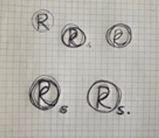
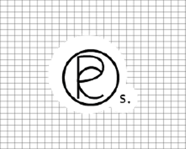

Repos
잠시 쉬어도 좋아요
- 작업기간 : 2022.04. 약 3주 소요
- 사용툴 : ps , ai , vscode, swiper
- 개인 프로젝트
일을 하고 있지만 그 목적과 의미를 잃어 힘들어하는 사람들이 있고 돈을 잘 벌어도 즐겁지 않은 사람들이 있습니다. 세상을 살아가는 데 있어 쉼, 마음 챙기기는 중요한 일입니다.
이미 지쳐있거나 휴식을 찾고 싶어 하는 사용자들에게 이 사이트는 목적을 달성하기 위해 귀찮음이 아닌 깔끔함과 편한 접근성을 위해 만들었으며 사용자의 마음에 안정감과 편안함, 정적인 느낌을 주기 위해 저명도 저채도의 색들을 사용하고 난색을 사용하였습니다.
"상담받고 싶은데 좀 더 간편할 순 없을까?"
상담 사이트에 들어가면
너무 많은 정보량으로 너무 복잡해
일 끝나고 집에 오면 너무 피곤한데 클릭 몇번으로 예약되는 사이트가 필요해!!
심리 상담? 나 처음 해보는 건데.. 익숙하거나 사용법이 쉬운 그런 곳 있나?

정보가 많은 것도 그렇지만 잘
체계적으로 정리돼 있으면 좋겠어
솔직히.. 가독성이 떨어지거나 익숙하지 않으면 바로 닫기 버튼 누르게 되더라
Research
코로나 블루가 지속되고 부의 경쟁을 시사하는 점이 있는 sns, 그리고 지속적인 스트레스로 인한 번아웃 증후군을 통해 mz세대들은 요즘 정신을 건강하게 쉬게 해줄 필요가 있음을 느끼고 서비스 대상층을 2030으로 선정하여 임의의 페르소나를 정해 사용자의 니즈를 파악해 보았습니다. 서비스를 이용하기 위해서는 잘 정리된 내용들과 간단하게 예약할 수 있는 사이트를 만들었습니다.
- #직관적인 UI
- #단 몇번의 클릭으로 예약완료
- #체계적인 정보
Keyword
사용자가 처음 이 웹사이트에 접근했을 때 쉽게 다가올 수 있도록
유용한 사이트가 되기 위해 알아보기 쉬운 정보들을 넣고 체계적으로 정리된
편안한 색을 사용하여 거부감이 들지 않도록
Logo Design
- R+e+p+o+s
- 
- 
Color
#f7edd0
#d1b7a1
#dee6b6
#6e8c5a
#f4e8dd
Typeface
Noto Sans KR
가나다라마바사아 abcdefghijkl 012345
Nanum Gothic
가나다라마바사아 abcdefghijkl 012345
Nanum Myeongjo
가나다라마바사아 abcdefghijkl 012345
Icons
Main Page Detail
CODING
- flex로 작업했습니다.
- 마우스 오버 효과
- fixed 효과를 사용해 화면사이드에 배너 창을 만들었습니다.
- 화면 하단의 top 버튼은 juqery-scrollTop을 활용해 만들었습니다.
DESIGN
메인 슬라이드 부분에 상담 바로가기를 넣어 상담 예약을 바로 할 수 있습니다.
웹 페이지 우측에 사이드 배너를 넣어 필요한 정보를 바로 얻을 수 있도록 하였습니다.
상담사 선생님들을 확인할 수 있는 카테고리를 넣어서 간단하게 이미지로 파악 할 수 있도록 하였습니다.
상담 카테고리로 원하는 상담 분야가 있다면 바로 예약할 수 있도록 하였습니다.
이용 안내 배너를 넣어 메인 페이에서 내비게이션을 타고 들어가지 않아도 이용 내역을 확인할 수 있게 하였습니다.
그 밑에는 상담 분야를 나눠 그 상담 예약을 할 수 있게 하였습니다.